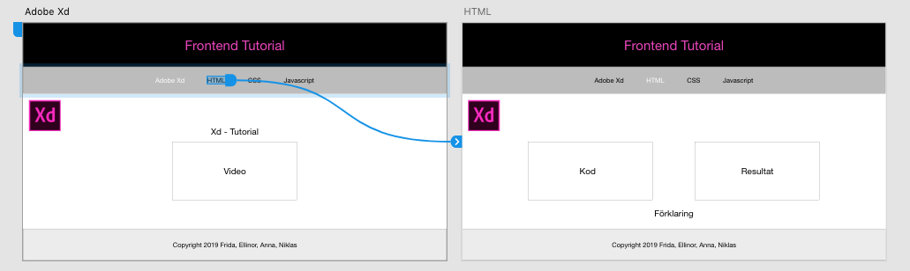

Xd - Tutorial
Experience Design
Adobe Experience Design är ett gratis program som gör det smidigt att ta fram prototyper för alla sorters enheter. På ett och samma canvas så kan du skapa form för flera olika enheter samt länka ihop sidorna till varandra vilket ger ett mer realistiskt intryck.
Dator
I videon ovan kan ni ta del av när jag skapade denna sidan som mockup, för Dator, i Adobe Xd.
Mobil
I videon ovan kan ni ta del av när jag skapade denna sidan som mockup, för Mobil, i Adobe Xd.
Att tänka på när du använder dig av Adobe Xd
- Först och främst, välj vad din design ska representera en mockup för. Mobil? Dator? Ipad? Eller val av egen storlek.
- Ta allt steg för steg, börja uppifrån och arbeta dig nedåt.
- Glöm inte att skapa mappar och helst namnge dessa för en bättre struktur.
- När du skapar mappar är det viktigt att tänka på i vilken ordning du gjort de olika lagren och hur de hamnar i mappen. Detta kan vara avgörande då det som hamnar längst ner i den aktuella mappen, uppvisas längst bak på canvasen.
-
Färger kan anges med Hex, RGB och HSB. Samt med hjälp av Pipett (
 ).
).
- Adobe Xd hjälper dig genom att omedelbart markera avståndet till både canvasen såsom de olika lager. Exempel på detta kan ni se i de båda videor ovan.
- Du kan dra linjer mellan olika tavlor för att göra dina prototyper levande och ge dem en mer realistisk upplevelse. 
- Du kan sätta fasta positioner på till exempel rubriker och sidfot, på så sätt så blir dem fast placerade när det scrollas.
- Tips! Genom att trycka på ett objekt samtidigt som man håller ner alt-knappen samt drar ut objektet så dupliceras det. Exempel på detta kan ni se då jag gör menyn för mobil-versionen.
- Kom ihåg att namnge och spara dokumentet.